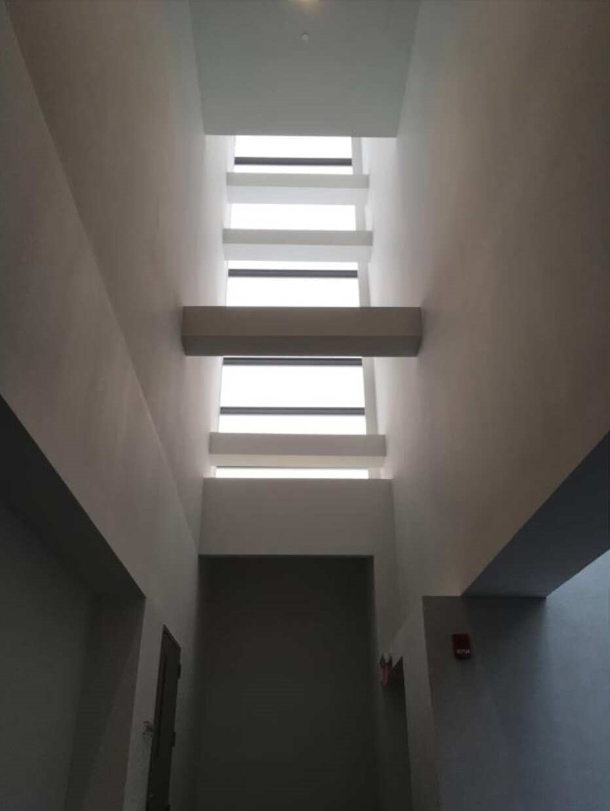
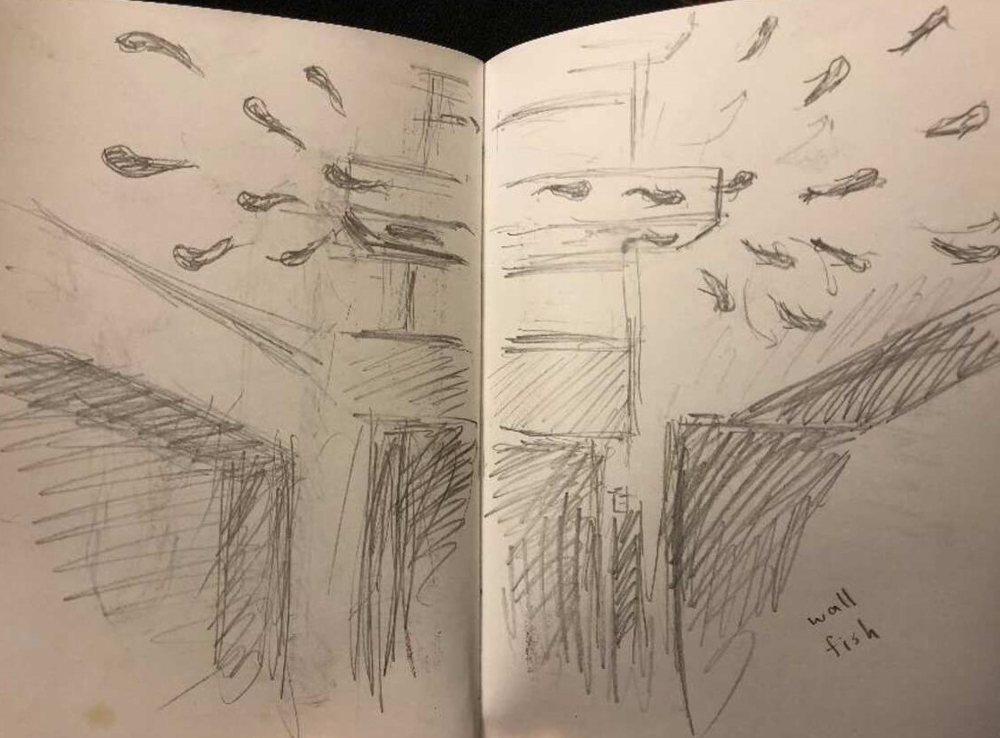
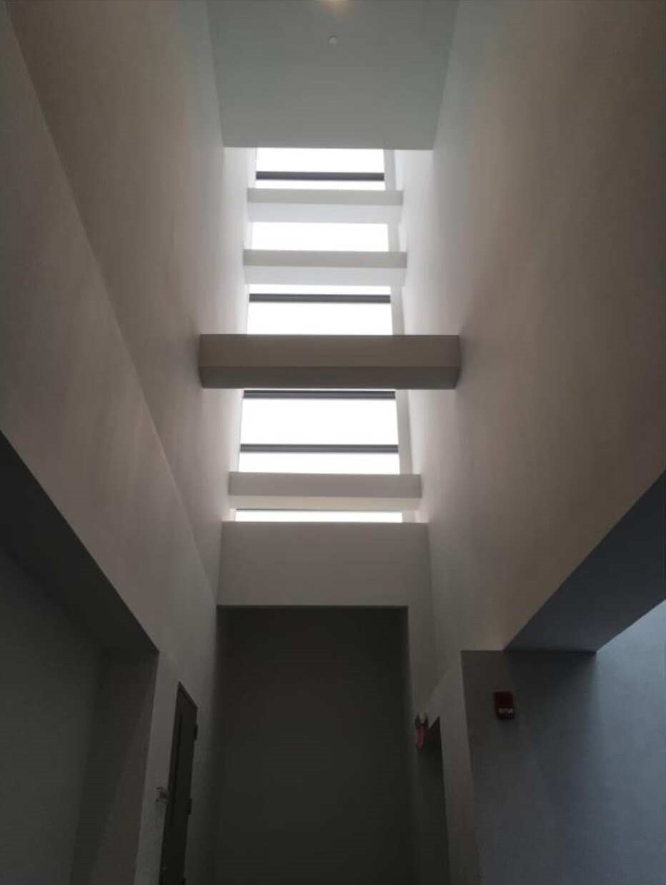
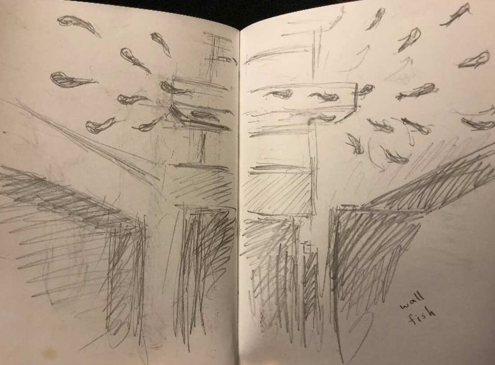

Wall Fish
Concept for Site-Specific Installation
2018
Wall Fish is a site-specific installation concept designed for the Wang Center at Stony Brook University. The distinctive blend of East Asian and American influences provided a perfect backdrop for my work, symbolizing the confluence of different cultural currents. The concept explores fluidity and mobility, mirroring how water—heard throughout the space from the central fountain—creates dynamic environments. By incorporating fish swimming through walls, I aimed to evoke a sense of tranquility, while the visual and auditory experience shifts as viewers move between floors. The installation harnesses both sound and space to create a continuously evolving encounter with the work.
 




×